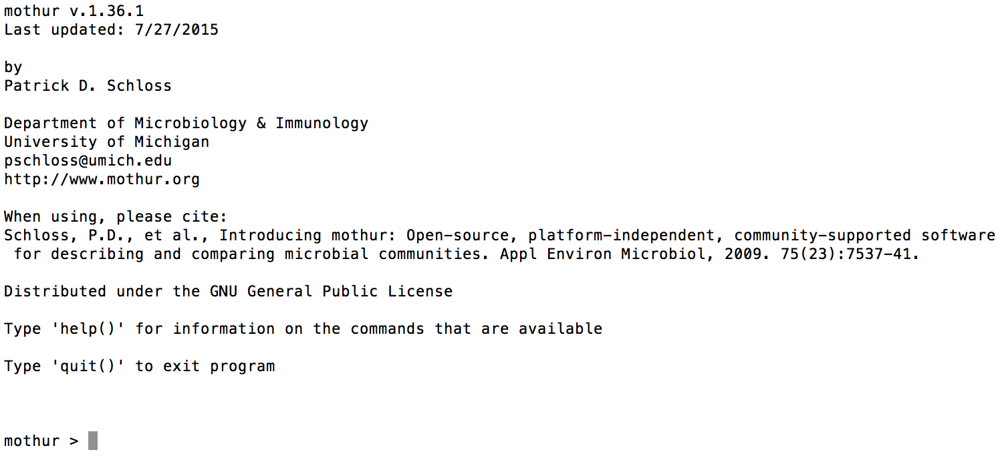

Mothur Workflow
Setup
Install
The primary software used for analysis is Mothur. This program is command line based, and will require you to type simple commands into either Terminal (Mac) or Command Prompt (Windows).
To download Mothur go to the Mothur github downloads page and download the latest version for your operating system. Unzip then move this folder to your home directory (your C: Drive on a PC, or your ‘User’ folder on a Mac).
To check that you have placed the folder in the correct location, open up either Terminal (Mac) or Command Prompt (PC). Type ~/mothur/mothur (Mac) or C:\mothur\mothur.exe (PC). If your screen looks similar to this:

You have done it correctly.
Preparing files for analysis
Downloading sequencing data files from BaseSpace
To download the sequencing fields from BaseSpace. Go to https://basespace.illumina.com/home/index, log-in, and navigate to your sequencing run. Click “Download” and select “All FASTQ files for this run”. Then click “Download your files”. BaseSpace uses the “BaseSpace Downloader” to download your files. If you have not previously downloaded this program, you must download it at this time. Select the location to download your files.
Once your files have downloaded, navigate to the folder where the files were downloaded. There will be one folder that corresponds to each sample that was sequenced. In each of these folders there will be two files, one that corresponds to the forward reads, and one that corresponds to the reverse reads. The forward and reverse read files for all samples will need to be moved to a single folder for analysis to conduct the analysis.
Create a folder on your home directory with the name of your sequencing run (for the rest of this example it will be called “MiSeq_Run”). Move all of your files into this folder.
Once the files have been moved, the files must be unzipped/uncompressed. This can be done with the Archive Utility on a Mac and any file compression software, such as WinZip, on a PC. Make sure you unzip your files into the folder that you have created (i.e. “Miseq_Run”)
Create sample list
You will need to create a file that contains the name of your sample, and specifies which files correspond to this sample. This will tell the program which files to analyze for each particular sample. You can download the file “nemabiome.files” in the Examples section for an example of what this file must look like. Each line in this file represents a single sample that must be analyzed. The first column is the sample name, the second column is the file name for the forward read file, and the third column is the name of the reverse read file. Each column is separated by a single tab. An example is also listed below.
Example:
sample1 sample1_S1_L001_R1_001.fastq sample1_S1_L001_R2_001.fastq
sample2 sample2_S2_L001_R1_001.fastq sample2_S2_L001_R2_001.fastq
sample3 sample3_S3_L001_R1_001.fastq sample3_S3_L001_R2_001.fastq
...Sample names may vary between different Illumina platforms, so please check the names of your downloaded files, to ensure the file names are correct. Please name this file as “stability.files”, with the “.files” file extension. Place this file in your folder that you created for analysis. This is the only file that you will need to create from scratch for this analysis, if you use the provided files.
Download analysis files
Download the analysis files Nematode ITS2 database version 1.3, Nematode taxonomy file (version 1.3) and Mothur batch file. Place these files in the folder that contains your sequencing data (i.e. ‘MiSeq_Run’)
For a standard application do not make any changes to these files. If you are aware of the number of processors that your computer has, open up the batchfile.txt file, go to the first line and change the parameter “processors” from “processors=2” to the number of processors in your computer.
Running analysis
Once all files have been downloaded, open up Terminal or Command Prompt. You will then need to navigate to the folder you created, which can be done using the “cd” command. If you created your analysis folder in your home directory type:
cd MiSeq_RunThis will change to this folder.
Then type:
~/mothur/mothur batchfile.txt(On a Mac)
OR
C:\mothur\mothur.exe C:\MiSeq_Run\batchfile.txt(On a PC)
This will launch Mothur, and begin to complete the commands that are contained within the batchfile. You will need to leave your computer open and running while the analysis completes. The amount of time that it will take to run will vary with your computer, and the number of samples/reads that you will be analyzing. General run times will probably be around ~4 hours, on a standard computer, 96 samples with an average read depth of ~50,000 reads.
Once the analysis has completed, you will have a file called nemabiome_results.summary. You can open this file up and copy the contents into an Excel workbook to properly view the data.
Example output
You can download the file example_nemabiome_results.txt. This is what your output file should look like if you have completed the analysis correctly.
Initial interpretation of results
A youtube video outlines the main steps involved with the initial manipulation of raw read count data and basic visualisation of the example dataset.
1. Visualize raw read counts in excel spreadsheet
The first step is to copy and paste the raw read counts into an excel spreadsheet. The first three columns (rankID, taxon, daughterlevel) indicate the level of taxonomic classification. The fourth column (total) is the total number of reads assigned to that taxonomic level. The individual read counts for each sample begins in the 5th column and the sample name is given in the top row. To display reads solely assigned at the species level, delete all rows other than “taxlevel 12”.
2. Filter raw read count data
Delete rows that have very few total reads. These are very likely the result of background contamination. The number of reads chosen as a minimum threshold will vary between laboratories and specific applications. It is advisable to run blank sequencing controls alongside your experimental samples that can be used to assess the level of background contamination. In addition, rows that are “unclassified” at the species level also need to examined critically. If the total read count for these unclassified species are high then they may represent a species that is not present in the database. if the total read count is low (below the threshold that has been set), then the reads are probably the result of PCR/sequencing error and therefore need to be removed from the dataset.
3. Correction for PCR bias
The efficiency of ITS-2 rDNA PCR amplification varies between species for a variety of different reasons (see Avramenko et al., 2015 for a more comprehensive discussion of the issues involved). Consequently, correction factors have been estimated that can be used to correct for this amplification bias. The correction factor that we have empirically determined for the major cattle and sheep species are provided below (from Avramenko et al 2017 and Redman et al, unpublished data). Simply multiply the raw read count by the correction factor for each individual species.
Correction factors
Cattle
| Parasite species | Correction factor |
|---|---|
| Cooperia punctata | 2.7087 |
| Cooperia oncophora | 1.1545 |
| Haemonchus placei | 0.9339 |
| Nematodirus helvetianus | 0.7127 |
| Ostertagia ostertagi | 1.2592 |
Sheep
| Parasite species | Correction factor |
|---|---|
| Cooperia curticei | 1.6107 |
| Teladorsagia circumcincta | 1.1885 |
| Trichostrongylus vitrinus | 1.0239 |
| Trichostrongylus axei | 0.9647 |
| Trichostrongylus colubriformis | 1.0239 |
| Haemonchus contortus | 0.6970 |
4. Calculate relative abundance of each species
To estimate the relative abundance of each species in a sample simply divide the corrected read count by the total corrected read count for each individual sample and multiply by 100.
5. Graphical visualisation of species proportions
The resulting percentages can then be turned into a stacked bar chart as the the first step at visualising your results.